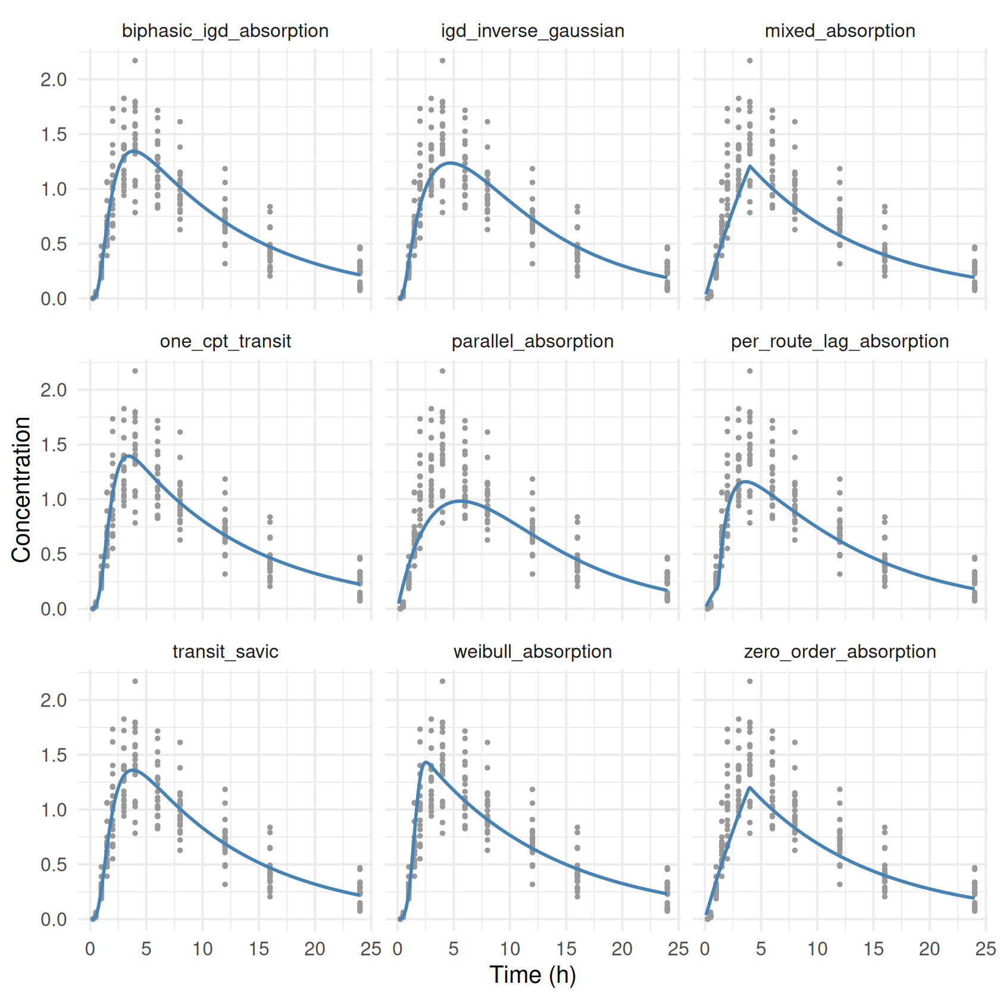

savic <- ferx_example("transit_savic")
igd <- ferx_example("igd_inverse_gaussian")
transit_oral <- read.csv(savic$data, na.strings = ".")
igd_oral <- read.csv(igd$data, na.strings = ".")
all.equal(transit_oral[, c("ID", "TIME", "AMT", "EVID", "DV")], igd_oral[, c("ID", "TIME", "AMT", "EVID", "DV")])
#> [1] TRUE
all.equal(ferx_predict(igd$model, igd$data)$PRED, ferx_predict(igd$model, savic$data)$PRED)
#> [1] TRUEAbsorption and bioavailability
Where you are
The oral models in Structural models: analytical and ODE absorb the dose by a first-order process. Real absorption often looks different. It can start late, rise smoothly after a delay, run at a constant rate for a while, or follow two routes at once. The fraction of the dose that reaches the circulation can also vary between subjects. ferx has lag times, absorption input-rate functions for ODE models, analytical transit and inverse-Gaussian models, and bioavailability parameters for these cases. This chapter fits every bundled absorption example and compares several of them on the same data.
WarningMaturity: stable and beta parts
Lag time is stable in ferx-core. The built-in absorption models (transit, inverse Gaussian, Weibull, zero-order, parallel and mixed pathways) and ODE models are beta. See feature maturity.
The data
Nine of the examples share one dataset: 20 subjects with a single oral dose of 100 and 12 samples each over 24 hours. The transit examples ship it as transit_oral.csv, the others as igd_oral.csv. The two files hold the same doses, times and concentrations. Only the CMT of the observation rows differs, which the prediction does not use for these models:
According to the example model files, these data were simulated from a transit model with a first-order absorption step, the structure of transit_savic. The other models on this dataset are therefore approximations, which makes it a useful test of how the fits and their warnings respond.
obs <- filter(igd_oral, EVID == 0)
ggplot(obs, aes(TIME, DV, group = ID)) +
geom_line(alpha = 0.4) + geom_point(size = 1) +
labs(x = "Time (h)", y = "Concentration")Minimal runnable call: transit absorption
In transit_savic, the dose enters the depot through the built-in transit() input rate, a chain of transit compartments with a continuous number of compartments n and a mean transit time mtt. The depot then empties into the central compartment by first-order KA:
invisible(ferx_model_get_section(savic$model, "odes"))
#> # [odes]
#> # depot : oral-dose compartment (mg); transit() delivers F*Dose over time
#> # central: concentration compartment (mg/L)
#> d/dt(depot) = transit(n=NTR, mtt=MTT) - KA*depot
#> d/dt(central) = KA*depot/V - CL/V*central
fit_savic <- ferx_fit(savic$model, savic$data, verbose = FALSE)
fit_savic$estimates[, c("estimate", "rse_pct")]
#> estimate rse_pct
#> TVCL 5.38556895 5.101844
#> TVV 56.16923430 5.298054
#> TVKA 0.95232944 11.669795
#> TVMTT 0.96509792 5.461020
#> TVN 3.13320270 4.127524
#> ETA_CL 0.04800009 34.401312
#> ETA_V 0.04306916 33.889814
#> PROP_ERR 0.15955691 5.093460Because n is continuous, the shape of the absorption delay is itself estimated. A dose into a compartment that carries an input-rate function is delivered through that function over time, not also as a bolus. Bioavailability scales the delivered amount as for any dose, so do not multiply transit() by F in the equation.
Reading the result: comparing absorption models
The nine models fitted to the shared data differ in absorption only. The [derived] block (Tables and figures) adds the exposure metrics of each fit: Cmax, Tmax and the AUC over 24 hours. It is appended to a copy of each model file, which leaves the estimation unchanged:
comparison_dir <- book_tempdir("absorption")
shared <- list(
transit_savic = ferx_example("transit_savic"),
one_cpt_transit = ferx_example("one_cpt_transit"),
igd_inverse_gaussian = ferx_example("igd_inverse_gaussian"),
weibull_absorption = ferx_example("weibull_absorption"),
zero_order_absorption = ferx_example("zero_order_absorption"),
parallel_absorption = ferx_example("parallel_absorption"),
mixed_absorption = ferx_example("mixed_absorption"),
biphasic_igd_absorption = ferx_example("biphasic_igd_absorption"),
per_route_lag_absorption = ferx_example("per_route_lag_absorption")
)
exposure_block <- c("", "[derived]",
" CMAX = max(IPRED)",
" TMAX = tmax(IPRED)",
" AUC_0_24 = integral(IPRED, from=0, to=24, step=0.1)")
fits <- lapply(names(shared), function(name) {
model <- file.path(comparison_dir, paste0(name, ".ferx"))
writeLines(c(readLines(shared[[name]]$model), exposure_block), model)
ferx_fit(model, shared[[name]]$data, verbose = FALSE)
})
names(fits) <- names(shared)
comparison <- do.call(rbind, lapply(names(fits), function(name) {
f <- fits[[name]]
exposure <- distinct(f$sdtab, ID, CMAX, TMAX, AUC_0_24)
data.frame(model = name, parameters = f$n_parameters, ofv = f$ofv, aic = f$aic,
condition_number = f$condition_number,
cmax = median(exposure$CMAX), tmax = median(exposure$TMAX), auc_0_24 = median(exposure$AUC_0_24),
warnings = paste(ferx_get_warnings(f, as_df = TRUE)$category, collapse = ", "))
}))
comparison |>
arrange(ofv) |>
gt::gt() |>
gt::fmt_number(columns = c(ofv, aic), decimals = 1) |>
gt::fmt_number(columns = c(condition_number, cmax, auc_0_24), n_sigfig = 3) |>
gt::cols_label(condition_number = "condition number", auc_0_24 = "AUC 0–24")[derived].
| model | parameters | ofv | aic | condition number | cmax | tmax | AUC 0–24 | warnings |
|---|---|---|---|---|---|---|---|---|
| biphasic_igd_absorption | 10 | −1,077.6 | −1,057.6 | 44,700,000,000 | 1.32 | 4 | 16.6 | covariance_regularized, inflated_rse, high_correlation, condition_number |
| transit_savic | 8 | −1,077.1 | −1,061.1 | 140 | 1.34 | 4 | 16.6 | |
| one_cpt_transit | 7 | −1,063.9 | −1,049.9 | 14.6 | 1.34 | 3 | 16.4 | |
| weibull_absorption | 7 | −943.8 | −929.8 | 12.9 | 1.35 | 3 | 15.9 | |
| igd_inverse_gaussian | 7 | −899.4 | −885.4 | 6,890 | 1.24 | 4 | 15.6 | high_correlation, condition_number |
| per_route_lag_absorption | 9 | −514.3 | −496.3 | 249 | 1.15 | 4 | 14.1 | dw_autocorrelation, high_correlation |
| zero_order_absorption | 6 | −436.2 | −424.2 | 5.00 | 1.19 | 4 | 13.5 | dw_autocorrelation |
| mixed_absorption | 8 | −435.6 | −419.6 | 1,030,000,000 | 1.19 | 4 | 13.5 | covariance_regularized, boundary_estimate, inflated_rse, dw_autocorrelation, high_correlation, condition_number |
| parallel_absorption | 8 | −381.8 | −365.8 | 351 | 0.987 | 6 | 13.9 | covariance_regularized, inflated_rse, dw_autocorrelation, high_correlation |
transit_savic agrees with the simulation model and reaches the second-lowest OFV with no warnings. one_cpt_transit, which has no KA step, follows with no warnings, then the Weibull and inverse-Gaussian models. The biphasic inverse-Gaussian model reaches a slightly lower OFV with two more parameters. Its warnings show that the data cannot inform them: relative standard errors in the thousands of percent, correlations of ±1 and a condition number of about 4.5 × 1010. parallel_absorption collapses to a single route (both absorption rate constants end at the same value), and mixed_absorption ends with parameters at their bounds:
So compare absorption models by OFV, but read the warnings before accepting a lower OFV (Diagnosing the model, Parameter uncertainty).
Note that max() and tmax() in [derived] use the observation times, so TMAX is always one of the sampling times. The typical profile on a fine time grid shows the shapes between the samples. ferx_predict() on a one-subject design (Simulating scenarios) gives it for every model. Each of these calls raises the W_DESIGN_DV warning that every design file with empty DV cells gets (explained in Simulating scenarios), so the loop muffles it:
design <- file.path(comparison_dir, "design.csv")
write.csv(data.frame(ID = 1, TIME = c(0, seq(0.1, 24, by = 0.1)), DV = NA,
AMT = c(100, rep(NA, 240)), EVID = c(1, rep(0, 240)), CMT = 1, MDV = c(1, rep(0, 240))),
design, row.names = FALSE, na = ".")
profiles <- do.call(rbind, lapply(names(fits), function(name) {
# suppress the W_DESIGN_DV warning of a design file, once per model
p <- suppressWarnings(ferx_predict(shared[[name]]$model, design, fit = fits[[name]]))
data.frame(model = name, TIME = p$TIME, PRED = p$PRED)
}))
ggplot(profiles, aes(TIME, PRED)) +
geom_point(data = obs, aes(TIME, DV), colour = "grey60", size = 0.6) +
geom_line(colour = "steelblue", linewidth = 0.8) +
facet_wrap(~ model, ncol = 3) +
labs(x = "Time (h)", y = "Concentration")
Options that matter: the absorption building blocks
| Absorption | How to write it | Bundled example |
|---|---|---|
| Lag time, analytical model |
lagtime= (alias alag=) on the pk line |
(variant below) |
| Lag time, ODE model |
LAGTIME = ... in [individual_parameters]
|
warfarin_ode_lagtime |
| Transit chain, ODE |
transit(n=, mtt=) in [odes]
|
transit_savic |
| Transit chain, analytical |
pk one_cpt_transit(cl, v, n, mtt), pk two_cpt_transit(cl, v1, q, v2, n, mtt)
|
one_cpt_transit, two_cpt_transit
|
| Hand-written transit states | Explicit d/dt() equations |
transit_2cpt |
| Inverse Gaussian, ODE |
igd(mat=, cv2=) in [odes]
|
igd_inverse_gaussian |
| Inverse Gaussian, analytical |
pk one_cpt_ig(cl, v, mat, cv2), pk two_cpt_ig(cl, v1, q, v2, mat, cv2)
|
one_cpt_ig, two_cpt_ig
|
| Weibull |
weibull(td=, beta=) in [odes]
|
weibull_absorption |
| Zero-order over an estimated duration |
zero_order(dur=) in [odes]
|
zero_order_absorption |
| Zero-order, then first-order |
zero_order() into a depot with - KA*depot
|
sequential_absorption |
| Two routes |
FR1*fn(...) + FR2*fn(...) with first_order(ka=), zero_order(), igd()
|
parallel_absorption, mixed_absorption, biphasic_igd_absorption
|
| A lag on one route |
lag= on any input-rate function |
per_route_lag_absorption |
| Bioavailability |
f= on the pk line, or an F individual parameter in an ODE model |
bioavailability, bioavailability_ode, warfarin_logit_f
|
Rules the parser enforces:
-
transit(),igd(),weibull()andzero_order()need an ODE disposition (variant below). - Each pathway fraction (
FR1,FR2) must be a single declared individual parameter, not an expression, and the fractions of a compartment must sum to 1. Declare the complement explicitly (FR2 = 1 - TVFR1). - At most one
zero_order()term may feed a compartment. - Arguments are named (
n=,mtt=) and must be declared individual parameters, so they can carry random effects and covariates.
The formulas, dose handling and domains are on the ferx-core absorption and lag time pages.
Variants
Lag time
An ODE model gets a lag time from the reserved individual parameter name LAGTIME. Every dose of the subject is delayed by it, without changes to the equations:
lag_ode <- ferx_example("warfarin_ode_lagtime")
invisible(ferx_model_get_section(lag_ode$model, "individual_parameters"))
#> # [individual_parameters]
#> CL = TVCL * exp(ETA_CL)
#> V = TVV * exp(ETA_V)
#> KA = TVKA * exp(ETA_KA)
#> LAGTIME = TVLAG * exp(ETA_LAG) # dose event delayed by this many hours
fit_lag_ode <- ferx_fit(lag_ode$model, lag_ode$data, verbose = FALSE)An analytical model takes the lag time as lagtime= on the pk line. The same model written that way reaches the same estimates, much faster:
lag_lines <- readLines(lag_ode$model)
lag_lines <- lag_lines[!grepl("^\\[odes\\]|^\\[scaling\\]|^ d/dt|obs_scale", lag_lines)]
lag_lines <- sub("ode\\(obs_cmt=central, states=\\[depot, central\\]\\)",
"pk one_cpt_oral(cl=CL, v=V, ka=KA, lagtime=LAGTIME)", lag_lines)
lag_analytical <- file.path(comparison_dir, "warfarin_lagtime_analytical.ferx")
writeLines(lag_lines, lag_analytical)
invisible(ferx_model_get_section(lag_analytical, "structural_model"))
#> # [structural_model]
#> pk one_cpt_oral(cl=CL, v=V, ka=KA, lagtime=LAGTIME)
fit_lag_analytical <- ferx_fit(lag_analytical, lag_ode$data, verbose = FALSE)
rbind(ode = c(ofv = fit_lag_ode$ofv, seconds = fit_lag_ode$wall_time_secs, fit_lag_ode$theta),
analytical = c(ofv = fit_lag_analytical$ofv, seconds = fit_lag_analytical$wall_time_secs,
fit_lag_analytical$theta))
#> ofv seconds TVCL TVV TVKA TVLAG
#> ode -53.4787 8.7459756 0.1306106 8.319013 0.8558202 0.4645430
#> analytical -53.4757 0.1420155 0.1306480 8.318340 0.8556386 0.4642196The small OFV difference comes from the ODE solver tolerance of the bundled model (Structural models: analytical and ODE). The individual lag times are in fit$individual_estimates:
head(fit_lag_analytical$individual_estimates, 3)
#> ID CL V KA LAGTIME
#> 1 1 0.1593243 8.125430 1.6339288 0.7340652
#> 2 2 0.0832847 7.603245 1.6013207 0.6860169
#> 3 3 0.2901217 8.834521 0.9163936 0.3391066The ODE fit reports the same individual parameters, to about four significant digits:
head(fit_lag_ode$individual_estimates, 3)
#> ID CL V KA LAGTIME
#> 1 1 0.1593235 8.125440 1.6339996 0.7340766
#> 2 2 0.0832840 7.603253 1.6013988 0.6860322
#> 3 3 0.2901097 8.834497 0.9164047 0.3391110Listing the same parameters in [output] (Tables and figures) puts them in fit$sdtab as well, next to the predictions and residuals, which is the form a table script wants:
lag_output <- file.path(comparison_dir, "warfarin_ode_lagtime_output.ferx")
writeLines(c(readLines(lag_ode$model), "", "[output]", " CL V KA LAGTIME"), lag_output)
fit_lag_output <- ferx_fit(lag_output, lag_ode$data, verbose = FALSE)
head(distinct(fit_lag_output$sdtab, ID, CL, V, KA, LAGTIME), 3)
#> ID CL V KA LAGTIME
#> 1 1 0.1593235 8.125440 1.6339996 0.7340766
#> 2 2 0.0832840 7.603253 1.6013988 0.6860322
#> 3 3 0.2901097 8.834497 0.9164047 0.3391110A lag time delays all routes together. lag= on an input-rate function delays one route only. per_route_lag_absorption gives the second of two first-order routes its own onset, as for an immediate-release plus delayed-release formulation:
invisible(ferx_model_get_section(shared$per_route_lag_absorption$model, "odes"))
#> # [odes]
#> d/dt(central) = FR1*first_order(ka=KA1) + FR2*first_order(ka=KA2, lag=LAG2) - CL/V*central
fits$per_route_lag_absorption$estimates[c("TVFR1", "TVKA1", "TVKA2", "TVLAG2"), c("estimate", "rse_pct")]
#> estimate rse_pct
#> TVFR1 0.6399467 9.529772
#> TVKA1 0.1184496 38.374078
#> TVKA2 1.1976036 45.319177
#> TVLAG2 1.1928938 10.603044On the shared data, which have no second release, this model fits poorly (see the comparison table).
Analytical transit and inverse-Gaussian models
one_cpt_transit puts the transit chain directly into a one-compartment model as a closed form, with no KA step and no ODE solver. The equivalent ODE model uses transit() straight into central. Both reach the same fit:
one_transit <- ferx_example("one_cpt_transit")
invisible(ferx_model_get_section(one_transit$model, "structural_model"))
#> # [structural_model]
#> pk one_cpt_transit(cl=CL, v=V, n=NTR, mtt=MTT)
transit_lines <- sub("pk one_cpt_transit\\(cl=CL, v=V, n=NTR, mtt=MTT\\)", "ode(states=[central])",
readLines(one_transit$model))
transit_lines <- append(transit_lines,
c("[odes]", " d/dt(central) = transit(n=NTR, mtt=MTT) - CL/V*central", "",
"[scaling]", " y = central / V", ""),
after = grep("^\\[error_model\\]", transit_lines) - 1)
transit_ode <- file.path(comparison_dir, "one_cpt_transit_ode.ferx")
writeLines(transit_lines, transit_ode)
fit_transit_ode <- ferx_fit(transit_ode, one_transit$data, verbose = FALSE)
rbind(analytical = c(ofv = fits$one_cpt_transit$ofv, fits$one_cpt_transit$theta),
ode = c(ofv = fit_transit_ode$ofv, fit_transit_ode$theta))
#> ofv TVCL TVV TVMTT TVN
#> analytical -1063.88 5.367674 58.76277 1.78888 3.731594
#> ode -1063.88 5.367671 58.76283 1.78888 3.731593two_cpt_transit does the same for a two-compartment disposition. Its dataset was simulated from the model at the initial values in its [parameters] block, so the fit should recover them:
two_transit <- ferx_example("two_cpt_transit")
invisible(ferx_model_get_section(two_transit$model, "structural_model"))
#> # [structural_model]
#> pk two_cpt_transit(cl=CL, v1=V1, q=Q, v2=V2, n=NTR, mtt=MTT)
fit_two_transit <- ferx_fit(two_transit$model, two_transit$data, verbose = FALSE)
fit_two_transit$estimates[1:6, c("estimate", "rse_pct")]
#> estimate rse_pct
#> TVCL 5.1413978 10.037088
#> TVV1 53.3023428 8.602980
#> TVQ 9.9454238 4.839220
#> TVV2 96.5756511 13.017664
#> TVMTT 0.9646063 2.717262
#> TVN 3.1189889 3.517900The analytical inverse-Gaussian models one_cpt_ig and two_cpt_ig are the closed forms of igd(). The one-compartment version and the igd() ODE model give the same fit on the one_cpt_ig dataset, which was simulated from an inverse-Gaussian model:
one_ig <- ferx_example("one_cpt_ig")
invisible(ferx_model_get_section(one_ig$model, "structural_model"))
#> # [structural_model]
#> pk one_cpt_ig(cl=CL, v=V, mat=MAT, cv2=CV2)
fit_one_ig <- ferx_fit(one_ig$model, one_ig$data, verbose = FALSE)
fit_igd_ode <- ferx_fit(igd$model, one_ig$data, verbose = FALSE)
rbind(analytical = c(ofv = fit_one_ig$ofv, fit_one_ig$theta), ode = c(ofv = fit_igd_ode$ofv, fit_igd_ode$theta))
#> ofv TVCL TVV TVMAT TVCV2
#> analytical -1303.536 5.310905 48.20073 1.992625 0.2979514
#> ode -1303.536 5.310905 48.20074 1.992625 0.2979513
ferx_get_warnings(fit_one_ig, as_df = TRUE)[, c("severity", "category")]
#> severity category
#> 1 warning high_correlation
two_ig <- ferx_example("two_cpt_ig")
invisible(ferx_model_get_section(two_ig$model, "structural_model"))
#> # [structural_model]
#> pk two_cpt_ig(cl=CL, v1=V1, q=Q, v2=V2, mat=MAT, cv2=CV2)
fit_two_ig <- ferx_fit(two_ig$model, two_ig$data, verbose = FALSE)
fit_two_ig$estimates[1:6, c("estimate", "rse_pct")]
#> estimate rse_pct
#> TVCL 4.8850296 7.525426
#> TVV1 41.9094634 11.308397
#> TVQ 10.5105915 10.193220
#> TVV2 68.4519055 9.288375
#> TVMAT 2.1242131 5.161357
#> TVCV2 0.3199686 5.691180
ferx_get_warnings(fit_two_ig, as_df = TRUE)[, c("severity", "category")]
#> severity category
#> 1 warning high_correlation
#> 2 critical condition_numberThe mean absorption time and its relative dispersion (TVMAT, TVCV2) are strongly correlated in these fits (the high_correlation warnings), even on data simulated from the model. The analytical models are valid while elimination is slower than absorption. Outside that region ferx evaluates an equivalent ODE model instead (see the warnings below).
A hand-written transit chain
Transit absorption can also be written as explicit states with a fixed number of compartments. transit_2cpt has three transit states feeding a two-compartment model with allometric weight scaling:
chain <- ferx_example("transit_2cpt")
invisible(ferx_model_get_section(chain$model, "odes"))
#> # [odes]
#> d/dt(transit1) = -KTR * transit1
#> d/dt(transit2) = KTR * transit1 - KTR * transit2
#> d/dt(transit3) = KTR * transit2 - KTR * transit3
#> d/dt(central) = KA * transit3 / V1 - (CL / V1 + Q / V1) * central + Q / V2 * peripheral
#> d/dt(peripheral) = Q * central / V1 - Q / V2 * peripheral
fit_chain <- ferx_fit(chain$model, chain$data, verbose = FALSE)
fit_chain$estimates[, c("estimate", "rse_pct")]
#> estimate rse_pct
#> TVCL 6.46029439 17.243722
#> TVV1 36.02539363 46.636453
#> TVQ 16.98489793 37.641276
#> TVV2 95.45330233 19.998815
#> TVMTT 2.12451136 18.906474
#> ETA_CL 0.04003744 109.864141
#> ETA_V1 0.08304266 72.324768
#> ETA_KA 0.09214035 41.473815
#> PROP_ERR 0.33896863 6.484613
ferx_get_warnings(fit_chain, as_df = TRUE)[, c("severity", "category")]
#> severity category
#> 1 warning eta_shrinkage
#> 2 warning high_correlationHere the number of compartments is fixed at three. With transit(n=, mtt=) it is a parameter.
Generating the disposition with ode_template
transit(), igd(), weibull() and zero_order() need an ODE model. Combining one with an analytical pk line is an error, and the message names the fix:
error_lines <- sub("ode\\(obs_cmt=central, states=\\[depot, central\\]\\)",
"pk one_cpt_oral(cl=CL, v=V, ka=KA)", readLines(savic$model))
pk_with_transit <- file.path(comparison_dir, "pk_with_transit.ferx")
writeLines(error_lines, pk_with_transit)
try(ferx_fit(pk_with_transit, savic$data, verbose = FALSE))
#> Error in ferx_rust_fit(model_path = normalizePath(model), data_path = normalizePath(data), :
#> Error parsing model: [structural_model]: `transit(...)` absorption requires an ODE disposition, but the model uses an analytical `pk ...`. transit(...) has no closed form, so ferx will not silently turn the analytical model into an ODE. Replace `pk NAME(...)` with `ode_template NAME(...)` (ferx writes the disposition ODE) and keep `transit(...)` in [odes]. [E_PARSE]ode_template (Structural models: analytical and ODE) writes the disposition equations of a built-in model. A d/dt() line in [odes] replaces the generated equation for that state only, so the depot can get a transit input while the other equations stay generated:
template_lines <- sub("ode\\(obs_cmt=central, states=\\[depot, central\\]\\)",
"ode_template one_cpt_oral(cl=CL, v=V, ka=KA)", readLines(savic$model))
template_lines <- template_lines[!grepl("^ d/dt\\(central\\)|^ # (depot|central)", template_lines)]
template_model <- file.path(comparison_dir, "transit_template.ferx")
writeLines(template_lines, template_model)
invisible(ferx_model_get_section(template_model, "structural_model"))
#> # [structural_model]
#> ode_template one_cpt_oral(cl=CL, v=V, ka=KA)
invisible(ferx_model_get_section(template_model, "odes"))
#> # [odes]
#> d/dt(depot) = transit(n=NTR, mtt=MTT) - KA*depot
fit_template <- ferx_fit(template_model, savic$data, verbose = FALSE)
c(template = fit_template$ofv, transit_savic = fit_savic$ofv)
#> template transit_savic
#> -1077.126 -1077.126The generated model tracks amounts and scales central by V, while transit_savic writes central as a concentration. The fits are the same.
Weibull and zero-order absorption
weibull(td=, beta=) feeds a Weibull absorption-time density into central. A shape beta above 1 gives a delayed peak; beta = 1 is first-order absorption with rate 1/td. zero_order(dur=) delivers the dose at a constant rate over an estimated duration. Both fits are in the comparison table:
invisible(ferx_model_get_section(shared$weibull_absorption$model, "odes"))
#> # [odes]
#> d/dt(central) = weibull(td=TD, beta=BETA) - CL/V*central
fits$weibull_absorption$theta
#> TVCL TVV TVTD TVBETA
#> 5.398397 63.021944 1.655643 3.479048
invisible(ferx_model_get_section(shared$zero_order_absorption$model, "odes"))
#> # [odes]
#> d/dt(central) = zero_order(dur=DUR) - CL/V*central
fits$zero_order_absorption$theta
#> TVCL TVV TVDUR
#> 6.388410 69.524259 3.962956sequential_absorption combines them in series: a zero-order input fills a depot, which empties by first-order absorption. According to its model file, the dataset was simulated with TVCL 5, TVV 50, TVKA 1 and TVDUR 3:
sequential <- ferx_example("sequential_absorption")
invisible(ferx_model_get_section(sequential$model, "odes"))
#> # [odes]
#> d/dt(depot) = zero_order(dur=DUR) - KA*depot
#> d/dt(central) = KA*depot - CL/V*central
fit_sequential <- ferx_fit(sequential$model, sequential$data, verbose = FALSE)
fit_sequential$estimates[, c("estimate", "rse_pct")]
#> estimate rse_pct
#> TVCL 4.88069870 9.661597
#> TVV 41.06639455 5.548172
#> TVKA 0.87515000 8.868027
#> TVDUR 3.01635171 6.265132
#> ETA_CL 0.10983650 41.795460
#> ETA_V 0.02945935 43.512888
#> PROP_ERR 0.12426175 6.529186Two absorption routes
Routes are added up with pathway fractions. parallel_absorption has two first-order routes, mixed_absorption a zero-order and a first-order route, and biphasic_igd_absorption two inverse-Gaussian routes:
for (name in c("parallel_absorption", "mixed_absorption", "biphasic_igd_absorption")) {
invisible(ferx_model_get_section(shared[[name]]$model, "odes"))
}
#> # [odes]
#> d/dt(central) = FR1*first_order(ka=KA1) + FR2*first_order(ka=KA2) - CL/V*central
#>
#>
#> # [odes]
#> d/dt(central) = FZO1*first_order(ka=KA) + FZO*zero_order(dur=DUR) - CL/V*central
#>
#>
#> # [odes]
#> d/dt(central) = FR1*igd(mat=MAT1, cv2=CV2_1) + FR2*igd(mat=MAT2, cv2=CV2_2) - CL/V*centralfirst_order(ka=) exists for these combinations. A single first-order route is the analytical pk ..._oral model. On the shared data none of the two-route models is supported by the data (see the comparison table).
An input-rate function reads the dose records that target its own compartment. Both routes above feed central from the same depot dose, so the pathway fractions split one dose event between them: two routes into one compartment need one dose record, not one per route. Two routes into different compartments are the other case, and each needs its own record. The shared dataset is the first case – a single EVID = 1 row into CMT 1 per subject, then observations:
parallel_data <- read.csv(shared$parallel_absorption$data, na.strings = ".")
head(parallel_data, 3)
#> ID TIME DV AMT EVID CMT MDV
#> 1 1 0.00 NA 100 1 1 1
#> 2 1 0.25 0.0017 NA 0 1 0
#> 3 1 0.50 0.0276 NA 0 1 0
table(dose_rows_per_subject = table(parallel_data$ID[parallel_data$EVID == 1]))
#> dose_rows_per_subject
#> 1
#> 20Adding a second record to feed the second route therefore gives the subject two doses. A copy of subject 1 with the dose row duplicated doubles the peak:
subject1 <- filter(parallel_data, ID == 1)
one_dose <- file.path(comparison_dir, "parallel_one_dose.csv")
two_doses <- file.path(comparison_dir, "parallel_two_doses.csv")
write.csv(subject1, one_dose, row.names = FALSE, na = ".")
write.csv(arrange(bind_rows(filter(subject1, EVID == 1), subject1), TIME, desc(EVID)),
two_doses, row.names = FALSE, na = ".")
peak <- function(data) {
max(ferx_simulate(shared$parallel_absorption$model, data, n_sim = 1, seed = 1)$IPRED)
}
peaks <- c(one_dose_row = peak(one_dose), two_dose_rows = peak(two_doses))
peaks
#> one_dose_row two_dose_rows
#> 1.007537 2.015074The peak is 2 times higher. That is ordinary dose superposition, not something the fractions do: they normalise within each dose event and never across records, so a duplicated record doubles a single-route model just the same. Genuine repeated dosing is of course fine – one record per dose, and the profiles superpose.
When two routes into one compartment start at different times, keep the single record and give one route a lag=, as per_route_lag_absorption does above. That combination is refused under steady-state dosing, where the engine asks for the run-in to be written out instead (Dosing regimens and exposure metrics):
ss_data <- mutate(filter(parallel_data, ID == 1), SS = ifelse(EVID == 1, 1, 0), II = ifelse(EVID == 1, 24, 0))
ss_file <- file.path(comparison_dir, "per_route_lag_ss.csv")
write.csv(ss_data, ss_file, row.names = FALSE, na = ".")
lag_ss <- try(ferx_fit(shared$per_route_lag_absorption$model, ss_file, verbose = FALSE), silent = TRUE)
sub("\\. .*", ".", conditionMessage(attr(lag_ss, "condition")))
#> [1] "Fit error: Steady-state dosing (SS=1) into a built-in absorption compartment combined with an absorption lagtime (a compartment `lagtime`/`ALAG` or a per-route `lag=`) is not yet supported: the SS+lagtime pre-arrival seed does not yet route the dose through the absorption kernel over the previous interval."Bioavailability
bioavailability declares the typical fraction F directly on (0, 1) and puts the random effect on the logit scale, so each subject’s F stays between 0 and 1 (Initial estimates and a first fit). It is passed with f= to the pk line. bioavailability_ode is the ODE version: an individual parameter named F is applied to the dose by the engine and does not appear in the equations. Both give the same fit:
bio <- ferx_example("bioavailability")
bio_ode <- ferx_example("bioavailability_ode")
invisible(ferx_model_get_section(bio$model, "individual_parameters"))
#> # [individual_parameters]
#> CL = TVCL * exp(ETA_CL)
#> V = TVV
#> KA = TVKA
#> F = inv_logit(logit(THETA_F) + ETA_F) # individual bioavailability ∈ (0, 1)
invisible(ferx_model_get_section(bio$model, "structural_model"))
#> # [structural_model]
#> pk one_cpt_oral(cl=CL, v=V, ka=KA, f=F)
fit_bio <- ferx_fit(bio$model, bio$data, verbose = FALSE)
fit_bio_ode <- ferx_fit(bio_ode$model, bio_ode$data, verbose = FALSE)
c(analytical = fit_bio$ofv, ode = fit_bio_ode$ofv)
#> analytical ode
#> -489.4703 -489.4703
fit_bio$estimates[, c("estimate", "rse_pct")]
#> estimate rse_pct
#> TVCL 5.71314425 30.742674
#> TVV 56.67240359 30.230279
#> TVKA 1.50009213 4.901797
#> THETA_F 0.79235918 31.363375
#> ETA_CL 0.06811478 33.641142
#> ETA_F 0.15663331 224.478293
#> PROP_ERR 0.12736042 7.041506
bio_cor <- fit_bio$cor_matrix[c("TVCL", "TVV", "THETA_F"), c("TVCL", "TVV", "THETA_F")]
round(bio_cor, 2)
#> TVCL TVV THETA_F
#> TVCL 1.00 0.98 0.98
#> TVV 0.98 1.00 1.00
#> THETA_F 0.98 1.00 1.00The data contain oral doses only. With oral data, clearance, volume and F cannot be separated, which the correlations above show: every pair is between 0.98 and 1 in absolute value. Fix F at the value used in the simulation (0.70, according to the model file) with FIX:
fixed_f <- file.path(comparison_dir, "bioavailability_fixed_f.ferx")
writeLines(sub("theta THETA_F\\(0.70, 0.001, 0.999\\)", "theta THETA_F(0.70, 0.001, 0.999) FIX",
readLines(bio$model)), fixed_f)
fit_fixed_f <- ferx_fit(fixed_f, bio$data, verbose = FALSE)
#> Warning in .ferx_compute_cor_matrix(result$cov_matrix): One or more diagonal
#> elements are non-positive; correlation matrix may not be meaningful.
rbind(estimated_f = c(ofv = fit_bio$ofv, fit_bio$theta),
fixed_f = c(ofv = fit_fixed_f$ofv, fit_fixed_f$theta))
#> ofv TVCL TVV TVKA THETA_F
#> estimated_f -489.4703 5.713144 56.67240 1.500092 0.7923592
#> fixed_f -489.3943 5.064081 50.23376 1.500908 0.7000000The R warning refers to the fixed THETA_F, which has no standard error. The OFV changes by only 0.08. The data carry almost no information on F, only on CL/F and V/F. warfarin_logit_f shows the same problem more strongly. Its estimates end at a bound, with grossly inflated relative standard errors:
logit_f <- ferx_example("warfarin_logit_f")
fit_logit_f <- ferx_fit(logit_f$model, logit_f$data, verbose = FALSE)
fit_logit_f$estimates[, c("estimate", "rse_pct")]
#> estimate rse_pct
#> TVCL 0.001710015 2841.724496
#> TVV 0.100000000 2841.730926
#> TVKA 0.853566248 6.426407
#> THETA_F 0.012620812 2841.923047
#> ETA_CL 0.017304538 67.539057
#> ETA_V 0.006500669 135.977516
#> ETA_F 0.015684619 101.058904
#> PROP_ERR 0.148863612 7.591382
ferx_get_warnings(fit_logit_f, as_df = TRUE)[, c("severity", "category")]
#> severity category
#> 1 warning eta_shrinkage
#> 2 warning boundary_estimate
#> 3 warning inflated_rse
#> 4 warning dw_autocorrelation
#> 5 warning high_correlation
#> 6 critical condition_numberThe worst relative standard error is 2,842%.
Estimating absolute bioavailability needs data after doses by a route with known bioavailability, such as intravenous doses in the same subjects. Otherwise fix F, or leave it out and interpret CL and V as apparent values.
Pitfalls
-
Do not give the dose twice. A dose into a compartment with an input-rate function is delivered by the function alone, and bioavailability is applied to the dose. Do not add
Fto the equations or a separate bolus. -
A lower OFV is not enough. Extra absorption parameters often reach a lower OFV that the data do not support. Check
inflated_rse,high_correlation,boundary_estimateandcondition_numberwarnings, as in the comparison above. -
TMAXfrom[derived]is a sampling time. Aggregates use the observation rows. Predict on a fine design for the shape between samples. -
Oral data alone do not identify
F. Fix it or add data that inform it. -
Keep absorption parameters in their domain.
mttmust be positive andnnon-negative. Parameterise them log-normally (MTT = TVMTT * exp(ETA_MTT)). A typical value outside the domain stops the fit withE_ABSORPTION_DOMAIN. - Analytical transit and inverse-Gaussian models have a limited scope. Steady-state doses, infusions, inter-occasion variability and time-varying covariates are handled by switching the subject to the equivalent ODE model. Resets and doses into another compartment are rejected. See scope on the ferx-core absorption page.
Warnings you may see here
-
flip_flop(warning): an analytical transit or inverse-Gaussian model is outside the region where its closed form is valid, because elimination is at least as fast as absorption (the flip-flop regime). ferx then evaluates the equivalent ODE model instead, which is correct but slower. The check uses the typical values at the start of the fit.ferx_model_validate()with data reports it before fitting. Here the starting values ofone_cpt_transitare changed to a long mean transit time:flip_lines <- sub("theta TVMTT\\(1.0,", "theta TVMTT(20.0,", readLines(one_transit$model)) flip_lines <- sub("theta TVN\\(3.0,", "theta TVN(0.5,", flip_lines) flip_model <- file.path(comparison_dir, "flip_flop_start.ferx") writeLines(flip_lines, flip_model) flip_check <- ferx_model_validate(flip_model, one_transit$data) #> Validating: flip_flop_start.ferx #> data: transit_oral.csv #> #> Sections present: #> parameters [ok] #> individual_parameters [ok] #> structural_model [ok] #> error_model [ok] #> fit_options [ok] (optional) #> #> Result: VALID (with warnings) #> * warning W_TRANSIT_FLIP_FLOP: one_cpt_transit disposition rate (0.1000) ≥ transit rate KTR = (n+1)/mtt (0.0750) at typical values (subject 1): the flip-flop regime, outside the analytic absorption closed form's convergence domain. ferx automatically evaluates the equivalent ODE transit model for such parameters (correct, but slower than the closed form) — check the MTT / CL starting estimates if the flip-flop is unexpected. fit_flip <- ferx_fit(flip_model, one_transit$data, verbose = FALSE) c(ofv = fit_flip$ofv, fit_flip$theta) #> ofv TVCL TVV TVMTT TVN #> -1063.879780 5.367671 58.762834 1.788880 3.731593 ferx_get_warnings(fit_flip, as_df = TRUE)[, c("severity", "category")] #> severity category #> 1 warning flip_flopThe fit still reaches the optimum of the original model, but the warning stays. It refers to the starting values: check them when the regime is unexpected. The analytical inverse-Gaussian models report the same category. So does a model without an ODE equivalent (next item) whose subjects reach the regime at their individual estimates. See the ferx-core section on the flip-flop regime.
-
absorption_twin_declined(warning): ferx could not build the equivalent ODE model of an analytical absorption model, so the fallback above is unavailable. The model still fits. Subjects that would need the fallback (steady-state or infusion doses, inter-occasion variability, time-varying covariates, the flip-flop regime) are rejected with an error. The usual cause is an individual parameter named like a state of the ODE version, such asCENTRAL:twin_lines <- sub("^ V = TVV \\* exp\\(ETA_V\\)", " CENTRAL = TVV * exp(ETA_V)", readLines(one_transit$model)) twin_lines <- sub("v=V,", "v=CENTRAL,", twin_lines) twin_model <- file.path(comparison_dir, "twin_declined.ferx") writeLines(twin_lines, twin_model) fit_twin <- ferx_fit(twin_model, one_transit$data, verbose = FALSE) fit_twin$ofv #> [1] -1063.88 ferx_get_warnings(fit_twin, as_df = TRUE)$message #> [1] "This absorption model's ODE equivalent could not be built, so the model stays closed-form. Subjects needing the ODE fallback (time-varying covariates, a `TIME`-dependent parameter, IOV, steady-state or infusion doses, or the flip-flop regime) will be rejected with an explicit error instead of silently rerouting (W_ABSORPTION_TWIN_DECLINED, #1008). Reason: [odes]: name `CENTRAL` collides with a previously-declared state (case-insensitive); state, individual-parameter, and ODE-block intermediate names must all be distinct."With flip-flop starting values as well, the same model cannot fit:
twinless_flip <- file.path(comparison_dir, "twin_declined_flip_flop.ferx") writeLines(sub("theta TVN\\(3.0,", "theta TVN(0.5,", sub("theta TVMTT\\(1.0,", "theta TVMTT(20.0,", twin_lines)), twinless_flip) inherits(try(ferx_fit(twinless_flip, one_transit$data, verbose = FALSE), silent = TRUE), "try-error") #> [1] TRUE twinless_check <- ferx_model_validate(twinless_flip, one_transit$data) #> Validating: twin_declined_flip_flop.ferx #> data: transit_oral.csv #> #> Sections present: #> parameters [ok] #> individual_parameters [ok] #> structural_model [ok] #> error_model [ok] #> fit_options [ok] (optional) #> #> Result: INVALID #> * warning W_ABSORPTION_TWIN_DECLINED: This absorption model's ODE equivalent could not be built, so the model stays closed-form. Subjects needing the ODE fallback (time-varying covariates, a `TIME`-dependent parameter, IOV, steady-state or infusion doses, or the flip-flop regime) will be rejected with an explicit error instead of silently rerouting (W_ABSORPTION_TWIN_DECLINED, #1008). Reason: [odes]: name `CENTRAL` collides with a previously-declared state (case-insensitive); state, individual-parameter, and ODE-block intermediate names must all be distinct. #> * ERROR E_TRANSIT_FLIP_FLOP: one_cpt_transit starts outside the analytic absorption closed form's convergence domain at typical values (subject 1) — the flip-flop regime (disposition rate ≥ transit rate KTR = (n+1)/mtt), or (2-cpt) coincident disposition eigenvalues — so it returns an identically-zero concentration profile, which silently degenerates the objective (a proportional error model collapses `(σ·pred)²` to 0). This model has no ODE twin to fall back on (its twin was built and declined, #1008) — rewrite it as an explicit ODE `transit()` model, or check the MTT / CL starting estimates. Note: this model is not outside the rewrite's scope — its twin was built and then rejected by its own parse: [odes]: name `CENTRAL` collides with a previously-declared state (case-insensitive); state, individual-parameter, and ODE-block intermediate names must all be distinct. Fixing that restores the twin and this feature, and is usually easier than the rewrite suggested above.Renaming the parameter restores the ODE fallback. See “When a model loses its ODE twin” on the ferx-core absorption page.
Summary
- Lag times:
lagtime=on analytical models,LAGTIMEin ODE models, andlag=for a single route. - Absorption shapes:
transit(),igd(),weibull()andzero_order()in ODE models, combined with pathway fractions andfirst_order().ode_templatewrites the disposition around them. - Closed forms:
pk one_cpt_transit,two_cpt_transit,one_cpt_igandtwo_cpt_iggive the same fits as their ODE versions. - Compare absorption models by OFV and warnings, and add exposure metrics with
[derived]. - Bioavailability goes in
f=or anFparameter. Oral data alone do not identify it.
Next: Variability: random effects, residual error and IOV adds inter-occasion variability and other random-effect structures.
TipReference
- R help:
?ferx_fit,?ferx_model_validate,?ferx_predict - ferx-core: absorption, lag time, ODE models,
[derived]